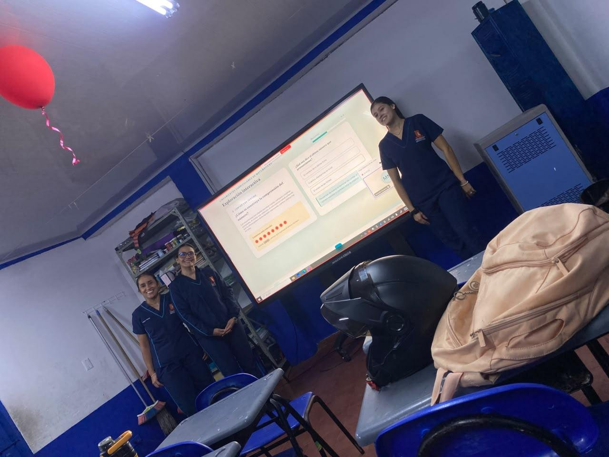

Pensamiento numérico y sistemas numéricos
El pensamiento numérico es la capacidad de comprender los números, las cantidades y sus relaciones, y utilizarlos para resolver situaciones de la vida cotidiana.

Presentado por
- Sharon Liset Sánchez Castro
- Yuliana Andrea Villada Osorio
- Angie Yiset Florez Coronado
De qué trató
Lo que se explicó
El pensamiento numérico es la capacidad de comprender los números, las cantidades y sus relaciones, y utilizarlos para resolver situaciones de la vida cotidiana. En la primera infancia, se desarrolla mediante experiencias como contar juguetes, comparar dónde hay más o menos objetos, ordenar cantidades y repartir materiales, favoreciendo la comprensión del significado de los números.
La presentación fue una exploración interactiva que abre con una pregunta para pensar: «¿Crees que saber contar significa comprender los números?»
Temas
Cómo se desarrolla en la primera infancia
Cuatro experiencias que ayudan a comprender el significado de los números.
- Contar juguetes
- Comparar dónde hay más o menos objetos
- Ordenar cantidades
- Repartir materiales
Fotos
Más evidencia de la exposición

Presentación completa
La presentación
Más exposiciones
Volver a todas las exposiciones